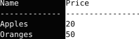

常用 Vim 快捷鍵與指令
Vim 是一個在 Linux 系統上常看到，在終端機上使用的文字編輯器。它最為人稱道的是：
- 通用性——幾乎所有 Linux 系統都預裝了 Vim 或是 Vi。
- 延展性——如果哪裡用不慣，有許多設定與插件可以延展 Vim 的功能。
當然，最令人聞風喪膽的還是它陡峭的學習曲線：要熟練它需要練習很長一段時間。好在，如果想在 Vim 裡面飛簷走壁，其實不需要熟悉所有指令。在用了 Vim 約莫一年之後，以下是一些我最常用到，也真的能加快編輯速度的 Vim 指令。
我用 Vim 的時機
因為我其實不太寫程式，最常使用 vim 反而是拿來寫筆記跟這種文章，使用的格式則是以 Markdown 為主。偶爾才會拿來寫程式或做別的事。
主要快捷鍵
主要在 vimtutor
裡面有出現的指令也不太需要複述，大家多跑幾遍 vimtutor
就會熟了。以下是將一些指令一起搭配的用法：
d<數字>gg：從游標下行數刪除到指定行數。對於沒開set relativenumber但開著set number的人很適合。di<符號>：刪除某個符號範圍內的文字。例如，如果我在以下這段文字：MAINTAINER="aabbzz123456@example.com"將游標放在引號內，執行
di"之後：MAINTAINER=""可以拿來這麼用的符號，目前試過
'、"、`、)、]、}都可以用。更棒的是，它可以跨行刪除，拿來處理程式碼應該蠻方便的。當然，其他 modifier 也可以搭配 i 使用，像是ci}，yi"等等。da<符號>：跟di<符號>的用法一樣，不過會連指定的符號一起刪掉。像是上面MAINTAINER的例子就會變成：MAINTAINER=
C-V（鍵盤上的 Ctrl-V）：進入塊狀選取模式（Visual Block Mode）。這個模式選取的是一整塊文字，而不是一段文字或幾行文字。例如，如果我現在有一個表格：Name Price ------------- ---------------- Apples 20 Oranges 50我要將 Name 移到 Price 的後面，這個時候我可以先按下 Ctrl-V，將 Name 的整列選起來：

在任一 visual mode 下
r<字符>：將所有選取的文字替換成那個字符。一個實際的用途是，在做純文字的表格時，可以先用空格隔開各列：Name Price ------------- ---------------- Apples 20 Oranges 50再來將空格那行用
C-V選起來，按下r|之後：Name |Price -------------|---------------- Apples |20 Oranges |50後續再將中間的
|改成加號，旁邊再多加一個空格，就是很完美的純文字表格了：Name | Price -------------+----------------- Apples | 20 Oranges | 50D：等同於d$。忘了什麼時候發現的。ce：刪除一個英文字，重新編輯。如果要刪兩個就用c2e。r：替換游標下的字母。神奇的是，中文也可以這樣用。dw：刪除一個英文字。如果要刪除到行尾，可以用d$。o：在下面開新的ㄧ行。如果要在上面開新的ㄧ行，可以用大寫的O。v：進入 “Visual Mode”（選取模式）。選完之後可以按d剪下，或y複製。"0p：貼上「複製」下來的東西。如果在複製東西之後還有剪下其他東西，但想要貼上複製的東西的時候，就可以用這個指令。
指令
nohl：如果有設定將搜尋結果 highlight 起來的話，打這串可以讓取消 highlight。set scrolloff=999：讓游標永遠停留在中間，有點類似打字機的模式。set mouse=：將滑鼠功能取消，在要選取文字複製時很好用。set nu/set nonu：顯示 / 隱藏行數。就是最左邊的那行數字。s/a/b/g：將同一行的 a 替換成 b。- 如果要在整份文件中替換，就要在前面加
%：%s/a/b/g - 如果要在每次替換前先詢問，就在最後加
c：s/a/b/gc
- 如果要在整份文件中替換，就要在前面加
r !<指令>：將指令的輸出結果放入文件中。就像我很常會複製其他文章的前幾行，就可以用r !head -n 5 document.txt。
至於.vimrc的設定，就留給其他篇吧，這篇要放還真的放不下。
Created: 2022-10-10
Last updated: 2022-10-10